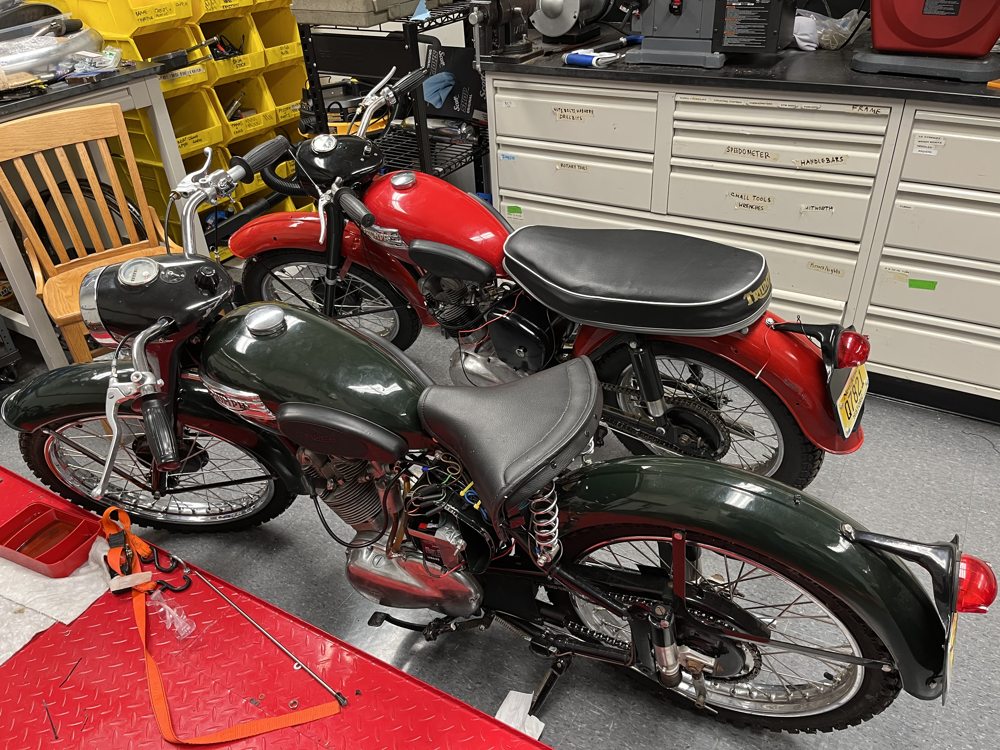
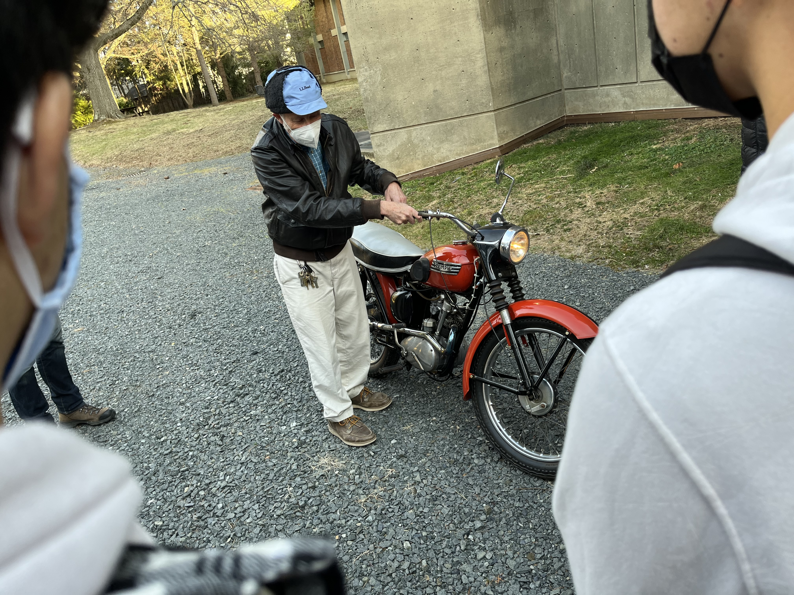
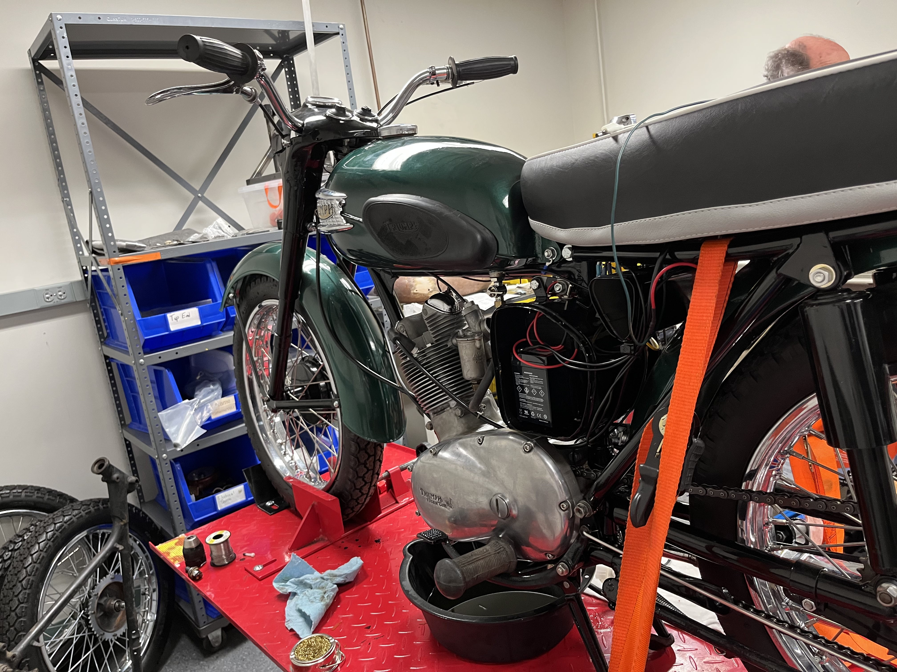
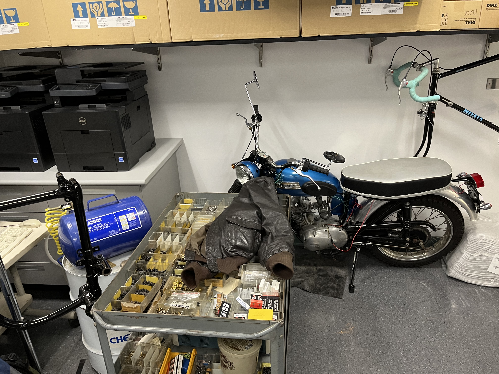
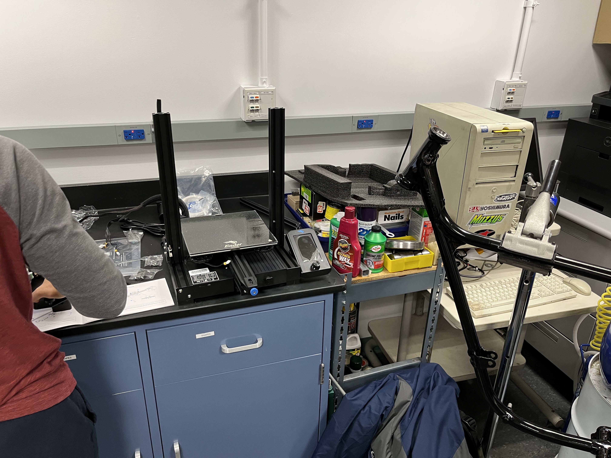
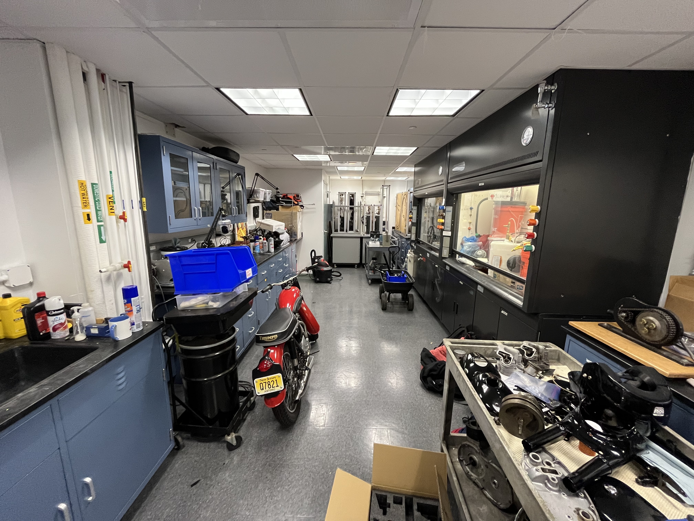
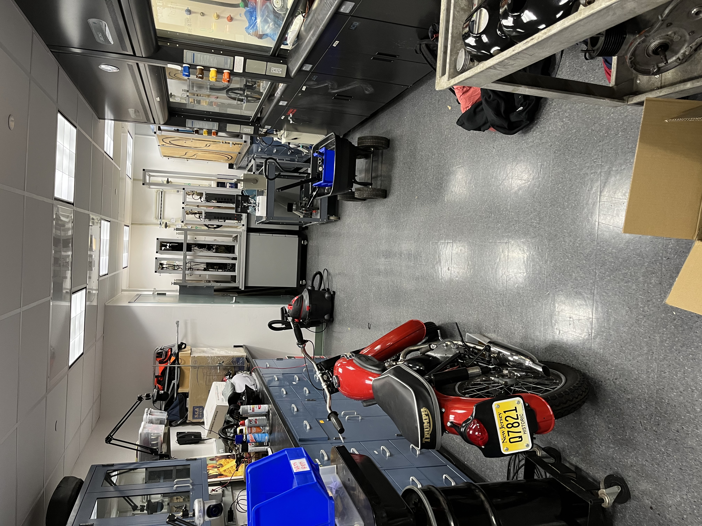
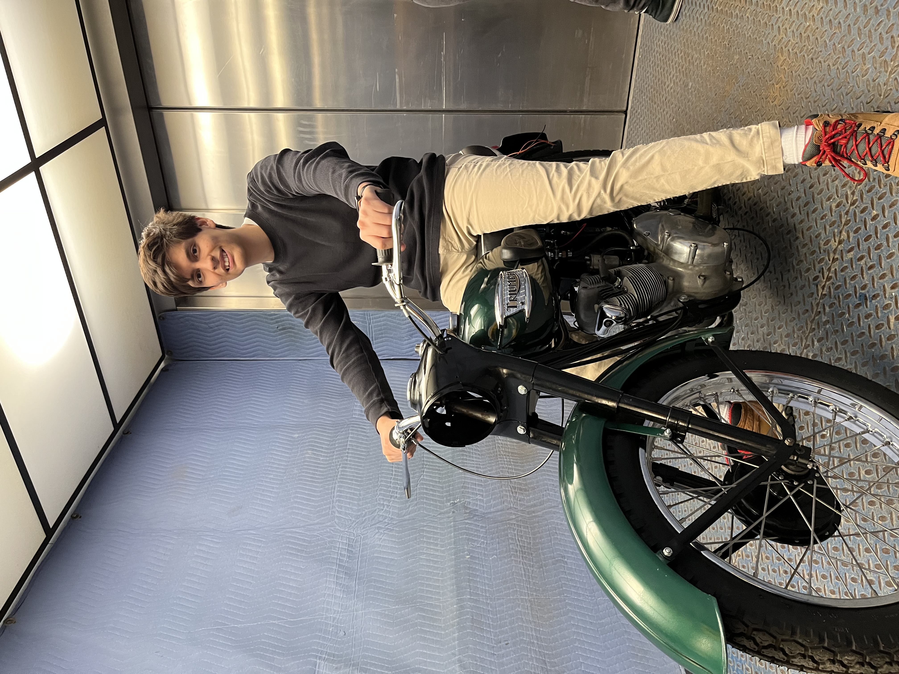

Photo Gallery

Completed 1954 Triumph Cub

Both 1960's Triumph Tiger (green) and 1954 Triumph Cub (red)

Professor showing us a previous year's Triumph Cub pre-restoration

Triumph Tiger on the lift, entire electrical harness being done. Fun fact — these bikes used the positive (red) as ground instead of negative! I got shocked...

Previous year's restored motorcycle

Workstation in the lab

Lab overview with motorcycle and parts

Shop working space with tools and fume hoods

Taking the freight elevator to get the bike started